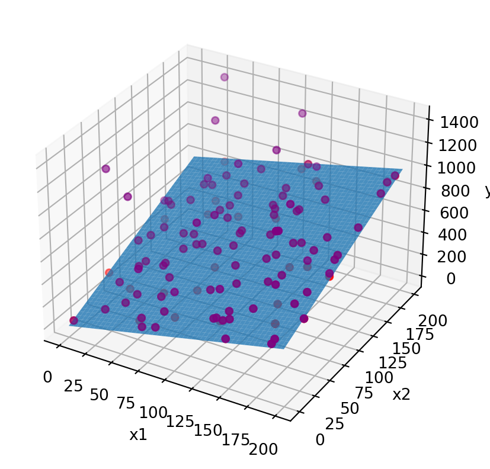

Code
import numpy as np
import matplotlib.pyplot as plt
dim = 2
N = 100
params = [2, 3]
interval = [0, 200]
outlier_fraction = 0.25
## create dataset
x = np.random.randint(interval[0], interval[1], (N, 2))
gt = x[:,0] * params[0] + x[:,1] * params[1]
# add random noise
y = gt + np.random.random(gt.shape)*0.1
# add outliers with 1000*N(0,1)
idx = np.random.randint(0, N, int(outlier_fraction * N))
y[idx] = y[idx] + np.random.rand(idx.size)*1000
# plot
xx, yy = np.meshgrid(range(interval[1]), range(interval[1]))
z_plane = xx*params[0] + yy*params[1]
# Create figure
fig = plt.figure()
ax = fig.add_subplot(111, projection='3d')
# Plot 3D plane
ax.plot_surface(xx, yy, z_plane, alpha=0.8)
# Set labels
ax.set_xlabel('x1')
ax.set_ylabel('x2')
ax.set_zlabel('y')
#and i would like to plot this point :
ax.scatter(x[:,0], x[:,1], gt, color='red')
ax.scatter(x[:,0], x[:,1], y, color='purple')
# when directly solving the linear equation X.theta = y, this is overdetermined, because there are many more equations than variables, so I'm just using the first #dim equations
# if we were doing RANSAC, the number of samples each time would also be this if we were going for the naive simple linear model
z_gt = np.linalg.solve(x[:dim, :dim],
gt[:dim])
print('z_gt=', z_gt)
z = np.linalg.solve(x.T.dot(x),
x.T.dot(y))
print('z=', z)
# plot estimated surface
# z_hat_plane = xx*z[0] + yy*z[1]
# ax.plot_surface(xx, yy, z_hat_plane, alpha=0.8)
# compute sum of squared error with z model
y_hat = x.dot(z)
for _y, _yhat in zip(y, y_hat):
print(_y, _yhat, (_y - _yhat)**2)
sse = np.sum((y - y_hat)**2)**(1/2)
print('sse=', sse)
plt.show()z_gt= [2. 3.]
z= [2.36005339 3.45161017]
498.05149115937206 574.5597469393441 5853.513202493626
416.08424624646085 481.15941474852406 4234.777555571919
818.027284337562 947.7447939819629 16826.63230834522
698.002393225462 809.5034473039241 12432.485060608122
1265.838120241473 634.6526385678269 398395.11227559263
434.0514600566971 503.2845944966303 4793.22690437786
385.0667088491666 446.08257578312896 3722.9360177029994
539.0813217458266 624.4448301602582 7286.928568820741
551.0355297084866 644.9749847756516 8824.621218315911
898.0262993299492 1044.6240875088097 21490.91149893404
282.0101182399276 326.04381463142465 1938.9664178985424
427.0883939102308 498.4747345033687 5096.009623279489
684.0967788926856 798.2912687546486 13040.381514833973
505.41547356566144 302.9142647416117 41006.7395752014
765.9566503865801 502.92814824605796 69183.99293828667
1097.6825668209226 550.7198711183471 299168.1904902282
542.067331185198 629.1350192133422 7580.782298566241
655.0883434036994 760.0893481338383 11025.210994338651
330.0420294998768 387.46247177722057 3297.1071913257706
575.0687454307048 663.7408741279087 7862.746407693492
320.03943256368274 370.88482911864344 2585.2543508312096
652.5312906551276 730.7045017932729 6111.0509396490515
607.0933046421186 702.3864276344641 9080.779289634287
569.0728431520196 658.6070521890799 8016.374587892019
928.3311122463144 389.7054208010677 290117.6354848701
1237.9963179779847 738.6420100119108 249354.72488427666
656.4260998437064 701.67610170328 2047.5626682914105
1215.611581019908 502.92814824605796 507917.6753503189
602.8457329262199 379.2907548181489 49976.82823690008
775.0847420681971 900.4539728955465 15717.44403824121
162.09472418073915 188.51022731460904 697.77880581549
533.0926000094306 618.7801887005122 7342.362855691976
638.0698781337688 743.1253414896444 11036.650380917707
669.0885866685963 781.033217899932 12531.600461519722
1410.4397929241572 750.9457453380652 434932.39880148665
711.0435327638444 822.2781666809069 12373.143782662917
413.00938834858187 484.0776388285892 5050.696226289065
421.09113196831066 488.03271735536623 4481.175854132452
559.0359950894308 644.8604469753955 7365.836541526263
694.0216110832374 806.198859238242 12583.735003629477
449.0897556349855 517.0038485452311 4612.324015821469
534.0881353749048 623.587482123813 8010.133068481291
875.195470113876 481.8073386396584 154754.22198477635
20.03912089980787 23.069714419724093 9.184497082958206
248.04186343282262 289.1078240578384 1686.413122055346
384.0409862565493 452.7763719797046 4724.553250510946
399.02178012803734 470.0344228344212 5042.795424144534
781.0296173897173 910.01129084202 16636.27208655646
616.6256004240936 186.47413586611202 185030.28246137648
792.0091234242344 919.1873779427983 16174.30842238862
168.0577557136409 196.82896637894203 827.782563147138
702.0524422266658 815.4621329741929 12861.757955449726
965.0855221929623 1121.8280078867479 24568.206821466556
301.0489885012657 349.79137067732745 2375.8198201972637
494.0748875457757 580.1021508889517 7400.690038316144
1111.4084501603766 659.3720804504312 204336.8795405464
447.007134960422 514.9976748317786 4622.71351199853
202.0198919753634 234.826595994363 1076.2798285902443
387.0117187894418 446.49629093382947 3538.414323200865
625.0884859805207 721.6805699376777 9330.030683186467
315.0028562474588 369.67360140158655 2988.8903757075836
721.0017127690058 835.8478320542856 13189.631114888709
322.0029696367921 377.8453183606581 3118.3679109978584
1012.0710946131396 228.4841129084382 614008.557897084
647.0732523568516 754.3648712040033 11511.491474842467
346.0627427011371 406.16595908942793 3612.3966202177116
1106.6549820079704 209.45666365066364 804964.8224631792
107.01486125724051 124.40498825922106 302.41651714501285
592.0374982598751 688.3132939052516 9269.028827150305
927.2070217575082 924.6451618271942 6.563126302548308
495.0902673546589 575.1777530954339 6414.005372278836
645.0850063420996 745.9888632395423 10181.588336779589
832.0517682752575 584.146982620862 61456.78275035177
306.06772073335054 352.4181171168307 2148.3592449057282
343.0164483711958 395.4598154659472 2750.3067522348547
462.92919346544784 279.0769554905756 33801.64540836906
227.06167667958067 265.6543122224583 1489.3915181453829
180.07708873208742 211.69704610455005 999.8217042363542
362.09075713817236 422.56922847766 3657.6454955612244
659.066074959323 764.4555752413551 11106.94676969643
1033.7456260172646 652.5885310487222 145280.73104485846
700.0779601990458 815.5792373444096 13340.54502221014
574.4739040734737 465.7605155019986 11818.600854692531
539.0020020412672 623.7370707990351 7180.031877383647
153.07627113256407 179.92479520483698 720.8432448594178
360.0165603279691 421.9785734866538 3839.291074677012
563.0449345025556 655.9503880145323 8631.423292266065
258.04171089337035 298.2539934235723 1617.0276662887848
935.0793269846837 1087.1349663370088 23120.917458844357
1286.845352355487 919.9549727741103 134608.55062936668
452.09054582717926 525.0558945641251 5323.9421163041225
436.09165108221805 504.7599486891655 4715.335096236308
536.017953286522 624.5320167954308 7834.739438859131
302.09362483665046 356.0141828230746 2907.4265735673252
494.0595550927943 577.0941736037532 6894.747871260482
621.0166803935545 723.1533575602521 10431.900822654208
640.0761291095449 743.0082371194275 10595.018859358126
187.06964647436743 216.15302641720007 845.8429888991596
460.02314115285435 535.7346870225222 5732.238177974814
504.06637686948324 590.6638389771318 7499.1204434856345
sse= 2295.6301919648135